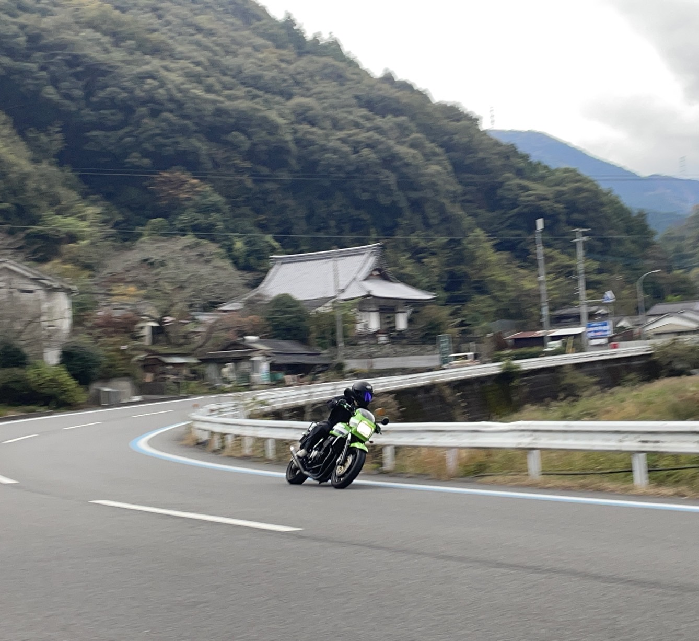
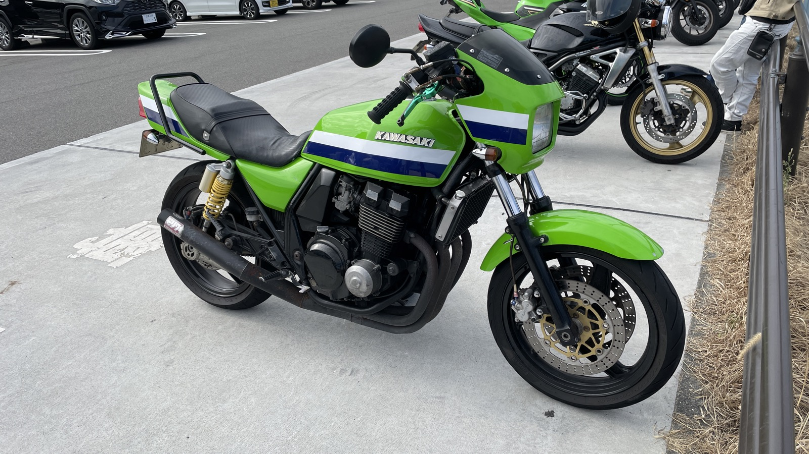
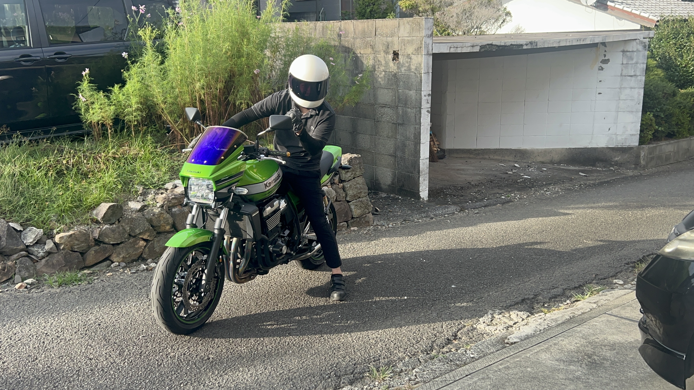
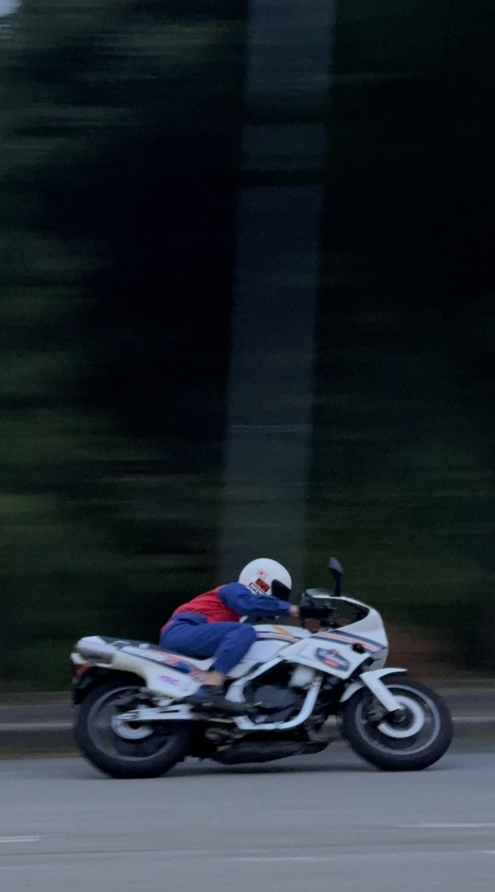
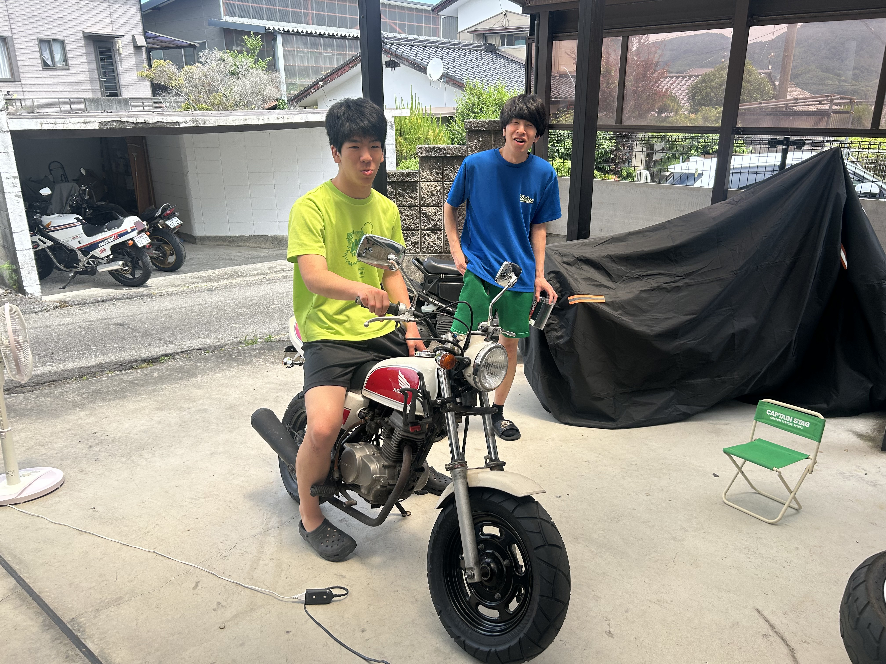
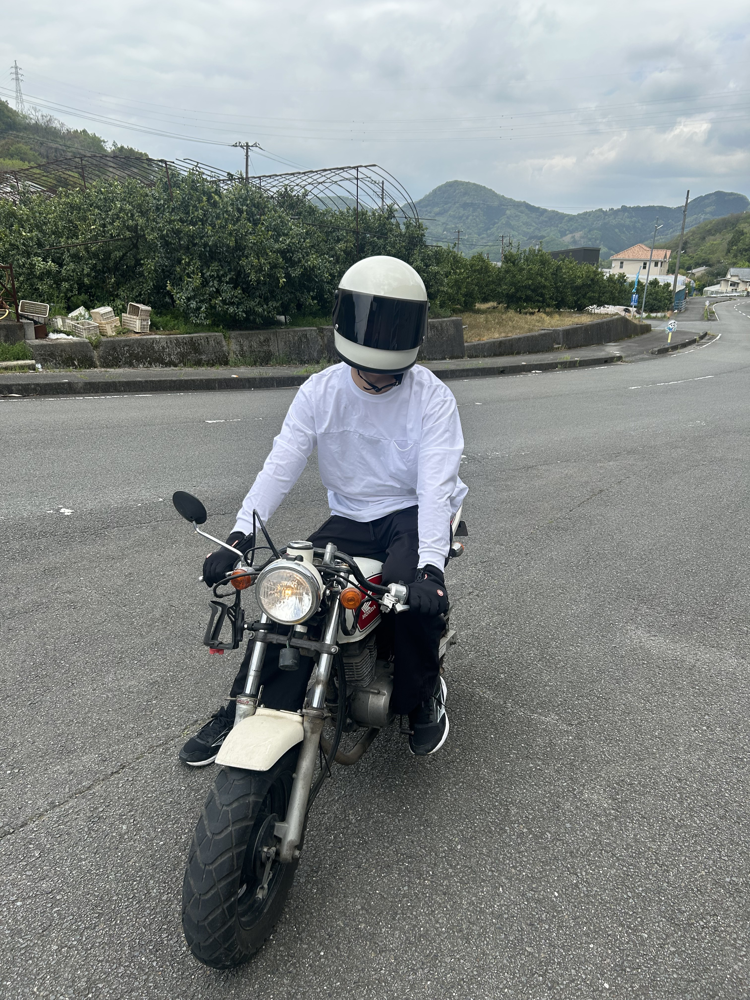
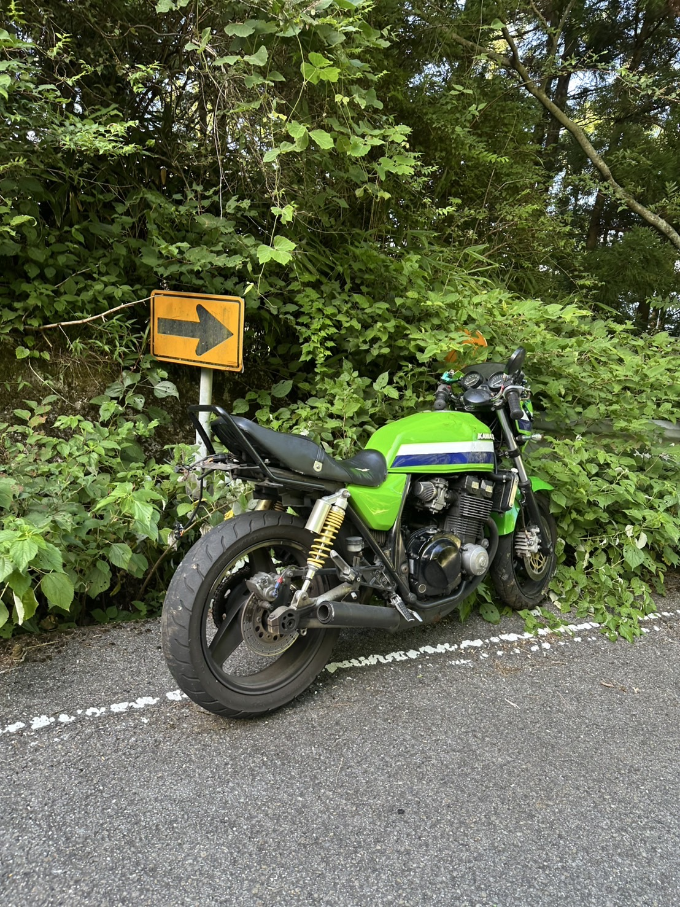

ワインディングを駆ける
山道のカーブを走り抜けた、躍動感あふれる一枚。
Maeda Family Memories
走った道、立ち寄った場所、家族と笑った日。大切な瞬間をここに残していきます。

山道のカーブを走り抜けた、躍動感あふれる一枚。

バイクが並ぶ景色も、ツーリングの楽しみのひとつ。

ヘルメットをかぶって、今日の道へ走り出す準備。

旧車ならではの姿と音を感じながら走った思い出。

ガレージに笑顔が集まった、何気なくて大切な一日。

小さな車体から始まる、大きなバイクの物語。
青空と山の稜線に囲まれた、忘れられないツーリング。

深い緑の道でひと休み。事故を乗り越え、また走り出す日のために現在修理中。